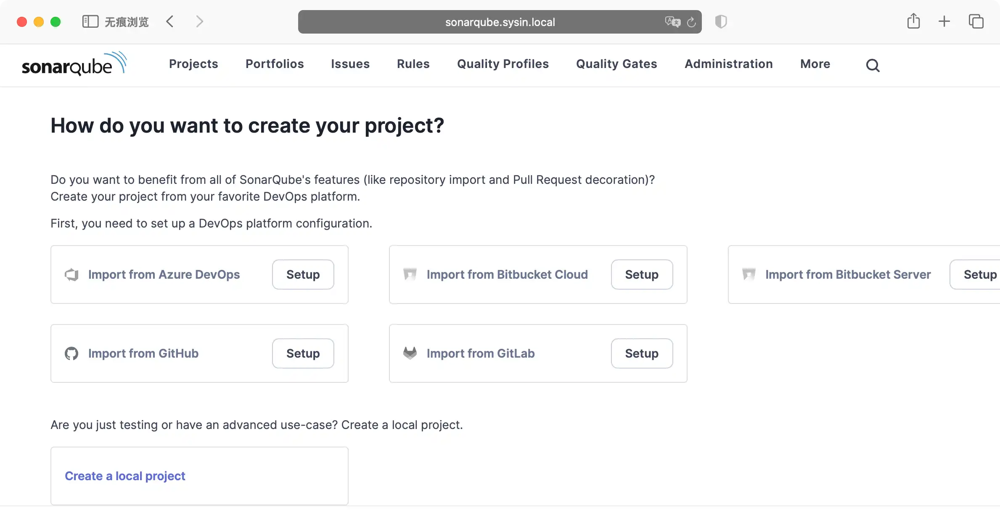

请访问原文链接：SonarQube Server 2026.4 发布 - 代码质量、安全与静态分析工具 查看最新版。原创作品，转载请保留出处。
作者主页：sysin.org
SonarQube Server
代码质量和安全性由您掌控
之前称为 SonarQube，本地部署的用于持续代码库检查的静态分析工具
保持 AI 生成的代码干净
释放 AI 编码助手的强大功能，而无需承担不良、不安全代码的风险。SonarQube Server 是您的干净代码解决方案，可以部署在任何地方、本地或云环境中。
受到 700 万开发者和 400,000 多个组织的使用和喜爱
提高代码质量的代码质量工具
您的代码是一项商业资产。通过 SonarQube Server 达到干净代码状态，实现代码的最高价值。
SonarQube Server 功能：
代码智能
利用 SonarQube 的深度洞察，更全面地了解您的代码库。通过减少认知负荷来提高开发人员的生产力。
与顶级 DevOps 平台集成
轻松加入项目。与 GitHub Actions、GitLab CI/CD、Azure Pipelines、Bitbucket Pipelines 和 Jenkins 集成，以自动触发分析并显示您工作地点的代码运行状况。
代码审查
通过 SonarQube 的质量阈值，防止不符合策略的代码进入生产环境。消除人工编写和 AI 生成代码中的问题，从而降低后期修复成本。
高性能和可操作性
按照您的方式进行部署，无论是在本地、在云中、作为服务器、使用 Docker 或 Kubernetes。多线程、多个计算引擎和特定于语言的加载可提供最佳性能。
顶级分析速度和准确性
在几分钟而不是几小时内收到可操作的清洁代码指标 (sysin)。Clean as You Code 会在您工作时检查较小的代码片段，为您提供有关新代码质量的准确反馈。
重要语言的关键安全规则
在您的开发工作流程中，在正确的时间和正确的位置无缝地发现编码问题。受益于 6,000 多个规则以及行业领先的 Java、C#、PHP、Python 等污点分析。
共享、统一的配置
设置特定的编码标准，使您的团队在代码健康方面保持一致并实现您的代码质量目标。另外，“边编程边学习” 可将开发人员的技能提升到同样高的水平。
用于 IDE 的 SonarQube
添加 SonarQube for IDE 扩展并将其连接到 SonarQube 服务器，以便在编码时动态查找编码问题，并确保您的团队遵循单一受监管的编码标准。
测量代码覆盖率
查看测试执行的代码库的百分比，以获得有关代码运行状况的宝贵见解。引导您到覆盖率低的领域进行改进。
Sonar 的人工智能
AI 辅助编码，由 SONAR 改进
新的 AI 代码保证
Sonar AI 代码保证是一个强大且简化的流程，用于通过结构化和全面的分析来验证 AI 生成的代码。这确保了每一段新代码在投入生产之前都符合最高的质量和安全标准。
AI CodeFix 简介
Sonar AI CodeFix 是一项强大的功能 (sysin)，可为代码分析解决方案 SonarQube Server 和 SonarQube Cloud 发现的问题提供代码修复建议。只需单击一下，您就可以获得有关如何解决一系列问题的建议，从而简化问题解决流程。
笔者提示：此类功能通常需要有效服务合同。
安全漏洞检测
增强的开发人员安全工具 | 安全与机密信息检测
静态代码分析
Sonar 的静态应用程序安全测试 (SAST) 引擎可检测代码中的安全漏洞，以便在构建和测试应用程序之前消除这些漏洞。使用 SAST 为复杂项目实现强大的应用程序安全性和合规性。
机密信息检测
SonarQube Server 包含一个强大的机密信息检测工具，这是用于检测和删除代码中机密信息的最全面的解决方案之一。与 SonarQube for IDE 一起使用，它可以防止机密信息泄露并成为严重的安全漏洞。
安全标准合规性
SonarQube Server 可帮助您遵守通用代码安全标准，例如 NIST SSDF。将 SonarQube Server 与 SonarQube for IDE 结合使用，可以自动检查项目代码是否存在安全漏洞，并提高整体代码质量。
基于开源，满足所有需求的版本
SonarQube Server 版本：
Community Build
免费开源，可提高开发效率和代码质量。
Developer Edition
小型团队和企业的基本功能。
Enterprise Edition
为现代企业提供更深入的见解和绩效。
Data Center Edition
任务关键型高可用性、可扩展性和性能。
什么是 LTA 版本？
LONG-TERM ACTIVE
SonarQube Server Long-Term Active (LTA)
为客户提供最佳体验、创新功能和世界一流的支持，以实现持续的业务成功。
什么是长期活跃 （LTA）
LTA 是指每 12 个月发布一次的 SonarQube Server 版本（以前称为长期支持或 LTS）。它是产品的功能完整版本，将保持活动状态更长的时间。大型组织有时更愿意继续使用 LTA，因为他们无法经常升级，而是选择每 12 个月升级一次。
系统要求
操作系统要求：
Linux (x64, AArch64)。建议使用主流发行版：
- 参看：Linux 产品链接汇总
Windows (x64)。建议主流支持版本：
macOS (x64, AArch64)。建议主流支持版本：
建议运行在虚拟机环境中，推荐使用本站原创虚拟机模板 OVF，简单、精准、高效。
软件要求已更新：包含在文档中。
新增功能
SonarQube Server 2026.4 发布，面向智能代理时代构建的验证体系
2026 年 7 月 22 日
此版本通过新增 AI 专用质量门禁、架构管理以及智能代理安全规则，扩展了代码验证能力。同时，Java 和 C# 拉取请求分析速度最高提升 90%。增量污点分析无需任何配置，即可将扫描时间从 10 到 20 分钟缩短至 1 分钟以内。

AI 智能代理已经不再是软件开发生命周期旁边的一项实验性技术。它们正在成为生产代码的重要来源，并且代码规模仍在持续增长。SonarQube Server 2026.4 扩展了组织所需的代码验证层 (sysin)，使其能够跟上这一变化，同时避免由 AI 代理生成代码带来的风险——这些代码正在以任何人工团队都无法完全审查的速度进入开发流水线。
🛡️ 针对智能代理生成代码的新防御机制
智能代理生成的代码与普通 AI 生成代码存在不同的风险模式。智能代理擅长生成“看起来差不多”的代码，并会以更快速度引入新的依赖风险、安全漏洞以及可靠性问题。
全新的 “Sonar way for Agentic AI” 质量门禁 正是针对这一现实进行调整：加强对安全性、可靠性以及新增依赖风险的要求，同时对轻微可维护性问题保持更加宽松的策略。
该质量门禁包含新的供应链风险检测条件，专门针对智能代理开发模式中特有的威胁，例如 AI 代理自主引入拼写仿冒（typosquatting）、幻觉生成或存在漏洞的软件包。
与此同时，AI 安全检测能力进一步扩展，新增专门的智能代理安全规则系列，覆盖 CLI 代码中特有的注入攻击面、更多基于 MCP 的安全风险，以及 AI 机制中的数据泄露问题，从而发现仅在智能代理编写代码时才会出现的新型威胁类别。
除了新的质量门禁之外，此版本还增强了产品内部对 JavaScript、TypeScript、Python 和 Java 智能代理 AI 质量配置文件的推广 (sysin)。现在，在浏览质量配置文件和项目设置过程中，横幅、徽章以及提示信息会展示这些配置文件，引导团队采用更加关注安全边界、错误处理、供应链风险、代码重复、并发以及性能等关键类别的规则集——这些正是 AI 生成代码中最重要的质量领域。
🏗️ SonarQube Server 引入架构管理能力
此前仅在 SonarQube Cloud 中提供的架构分析功能，现在已免费集成到 SonarQube Server 中。
该功能会针对 Java、C#、JavaScript、TypeScript 和 Python 项目，在每次扫描时自动运行，并为团队提供四项能力：
- 可视化当前软件架构
- 定义目标架构
- 将架构偏差作为标准问题展示
- 通过现有质量配置文件和质量门禁修复这些问题
对于软件架构师而言，这填补了长期存在的空白。过去需要依靠人工代码审查或团队经验来发现架构漂移，现在架构师可以定义哪些组件之间允许存在依赖关系，并让 SonarQube 自动发现违规情况。
这样可以在复杂依赖关系、超大组件以及职责分散逐渐累积为难以消除的架构技术债之前，及时进行处理。
📊 用事实取代假设：质量门禁遵循情况监控
新的仪表板现已提供给使用旧版本新代码定义的项目，可在项目概览和项目摘要页面查看。
该功能展示主分支发布在指定时间范围内通过或失败质量门禁的频率 (sysin)，并突出显示“高风险发布”（即代码在质量门禁失败情况下仍然发布）。
对于开发负责人而言，这将过去依赖经验判断的情况转变为团队持续遵守自身标准的真实记录。
对于工程管理人员而言，它能够量化由于质量门禁被视为可选项而产生的组织风险，将治理问题转化为基于数据的决策。
由于质量门禁包含安全相关条件，该仪表板还能够展示发布版本中存在未解决安全问题的频率。
⚡ 更快反馈，更低阻碍
污点分析引擎中的增量分析现在同时支持 Java 和 C#，重点优化大型复杂项目。
改进主要集中在此前耗时最长的场景：包含大量入口点和大型污点传播图的数据代码库，这些项目过去通常需要 10 到 20 分钟甚至更长时间才能完成分析。
现在，这些项目的扫描速度最高提升 90%，部分大型 Java 项目扫描时间从约 20 分钟降低至 1 分钟以内。
包括注入类漏洞和其他数据流问题在内的安全相关发现，可以更早地反馈给开发人员，无需降低覆盖范围，也无需修改任何配置。
GitHub 集成配置速度也得到提升。
新的引导式一键流程使用 GitHub App Manifest API 自动配置 GitHub App 连接，将配置时间从约 12 分钟缩短至不到 2 分钟。
SonarQube 会自动生成 Manifest，将管理员重定向至 GitHub 进行授权 (sysin)，并自动获取和加密生成的凭据，消除了手动配置负担，同时降低集成权限过高或不足的风险。
依赖风险管理速度同样得到提升。
批量操作现在允许团队一次性将多个风险发送至 Jira、重新分配负责人，或者同时修改多个发现项的状态和严重程度，使软件组成分析（SCA）工作流程与标准代码问题处理中已有的批量分诊能力保持一致。
🔍 更深入的语言覆盖
新增规则可以检测 Java 日期和时间处理中的细微且难以复现的问题，包括解析错误、时区问题以及夏令时转换问题，帮助开发人员在缺陷进入生产环境之前采用现代日期时间 API 实践。
AI 安全检测也新增了专用于智能代理安全的规则系列，覆盖 CLI 代码特有的注入攻击面、更多 MCP 安全风险发现，以及 AI 机制中的数据泄露检测。
SonarQube Server 还新增对 Gosu 的支持。
Gosu 是 Guidewire 平台使用的核心语言，该平台广泛应用于保险行业。
支持范围包括代码解析、语法高亮、代码指标以及超过 30 条针对代码质量和可靠性的规则，为采用 Guidewire 的企业使用 SonarQube 消除了长期存在的障碍。
🔐 为统一安全工作流程做准备
此版本还宣布未来将弃用独立的 Security Hotspots 工作流程。
未来版本中，Security Hotspots 将合并至标准安全问题流程。
当前版本已在 Security Hotspots 和 Measures 页面增加弃用提示，同时将相关 API 和插件 API 元素标记为弃用，并提供移除时间表和迁移路径说明，让团队能够提前做好准备。
📏 建立统一的“正常状态”标准
最后，新的基于研究的公式可以根据项目组件数量和问题数量预测后台分析所需时间。
每次分析现在都会被分类为：
- 健康（healthy）
- 需要调查（investigate）
- 严重（critical）
这为团队提供了一种自我诊断性能问题的方法。
更多详细信息请参看官方文档。
下载地址
版本历史：
SonarQube Server 2025.1 LTA Data Center Edition for macOS, Linux, Windows | January 2025 | 2025.1.0.102418
SonarQube Server 2025 Release 2 Data Center Edition for macOS, Linux, Windows | March 2025 | 2025.2.0.105476
SonarQube Server 2025 Release 3 Data Center Edition for macOS, Linux, Windows | May 2025 | 2025.3.0.108892
SonarQube Server 2025 Release 3.1 Data Center Edition for macOS, Linux, Windows | Jun 2025 | 2025.3.1.109879
SonarQube Server 2025 Release 4.2 Data Center Edition for macOS, Linux, Windows | July 2025 | 2025.4.2.112048
SonarQube Server 2025 Release 5 Data Center Edition for macOS, Linux, Windows | September 2025 | 2025.5.0.113872 (2025-09-24)
SonarQube Server 2025 Release 6 Data Center Edition for macOS, Linux, Windows | December 2025 | 2025.6.0.117042 (2025-12-11)
SonarQube Server 2025 Release 6.1 Data Center Edition for macOS, Linux, Windows | December 2025 | 2025.6.1.117629 (2026-01-20 New!)
SonarQube Server 2026 Release 1 LTA Data Center Edition for macOS, Linux, Windows | January 2026 | 2026.1.0.119033
SonarQube Server 2026 Release 2 Data Center Edition for macOS, Linux, Windows | March 2026 | 2026.2.0.121184
SonarQube Server 2026 Release 3 Data Center Edition for macOS, Linux, Windows | May 2026 | 2026.3.0.123014
当前版本：
SonarQube Server 2026 Release 4 Data Center Edition for macOS, Linux, Windows | July 2026 | 2026.4.0.125744

更多：HTTP 协议与安全

文章用于推荐和分享优秀的软件产品及其相关技术，所有软件提供免费版或试用版。内容若侵犯了您的版权，请联系作者删除。如果您喜欢这篇文章，或者觉得它对您有所帮助，亦或发现有不当之处；欢迎发表评论，也欢迎分享这个网站，或者赞赏一下，谢谢！提示：捐赠或赞赏属于自愿赠予行为，提交后即表示您对作者的支持与认可。为避免误操作，请在确认前仔细检查金额，支付完成后将无法撤销或退还。
 支付宝赞赏
支付宝赞赏  微信赞赏
微信赞赏赞赏一下
敬请注册！点击 “登录” - “用户注册”（已知不支持 21.cn/189.cn 邮箱）。 请勿使用联合登录（已关闭）。